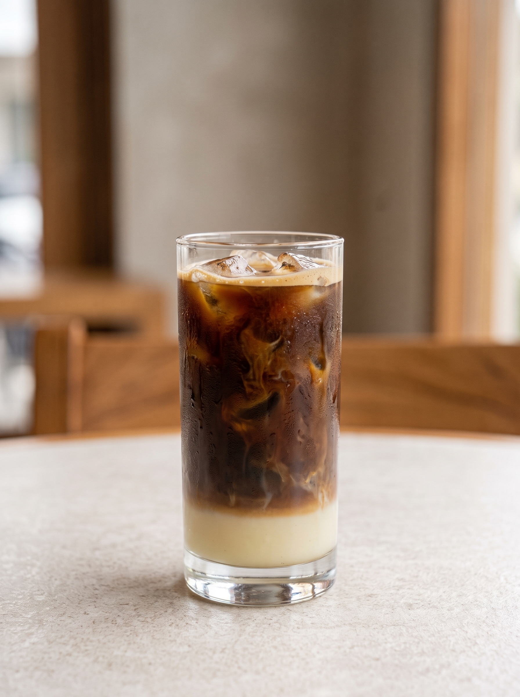
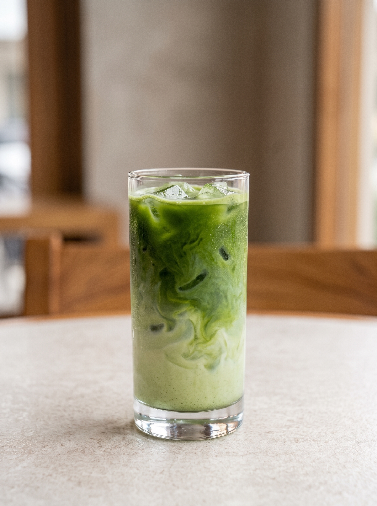
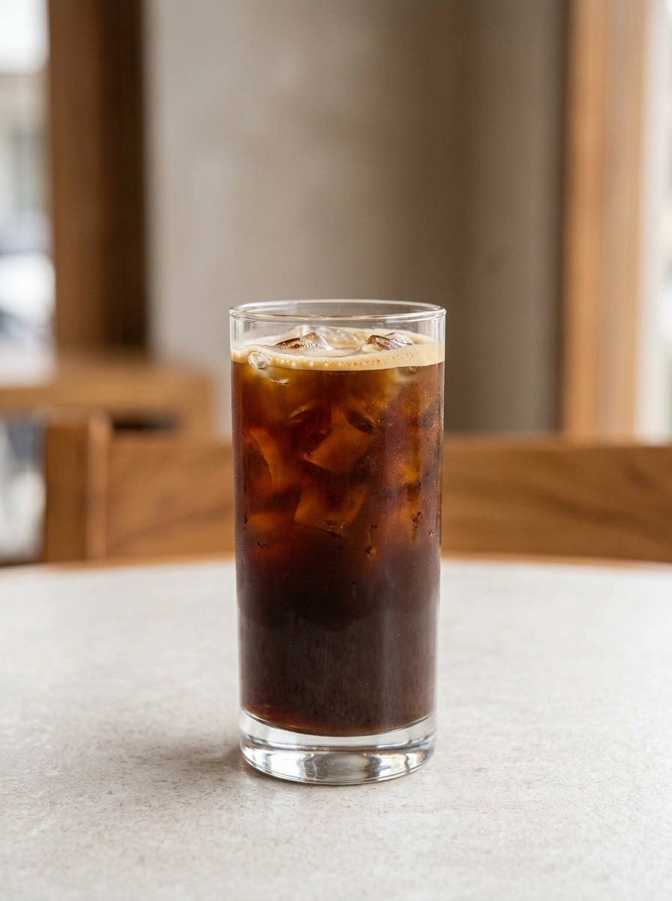
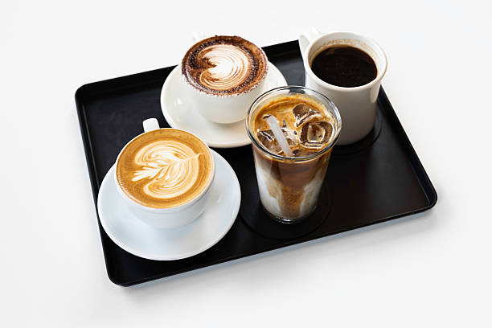

Slowfolk Best SellerSlow down. Sip local.
Locally Sourced coffee in P-2 Bangcud, Malaybalay City, Bukidnon, brewed
from Mindanao-grown beans and served without rush
100%
Mindanao beans
20+
Drinks on the menu
1
Cozy corner in Bangcud
Featured Drinks

People's ChoiceGreen Velvet

Old but BoldAmericano

Brewed Slow, Made Local
From hot brews to iced favorites, see everything we serve at Slowfolk Coffee.
Every cup is made with Mindanao-grown beans and traditional brewing methods.
How the business started?
Slowfolk Coffee began as one person's passion project. A photographer who loved the art of making coffee opened a small café in
Bangcud, Malaybalay City
with a simple idea: great coffee should be brewed right here, for the people who live here.